Weather Search
This project involved building a responsive web application that allows users to search for and view detailed weather forecasts.
Utilizing technologies like Angular, Node.js, and Bootstrap, the app integrates multiple APIs, including Tomorrow.io, Google Geocoding, and IPInfo, to deliver real-time weather data and intuitive visualizations. The app features dynamic form validation, autocomplete functionality, interactive charts, and a seamless user experience across devices.
Through this project, I deepened my understanding of front-end and back-end integration, AJAX and JSON data handling, and deploying full-stack applications on cloud platforms like Google Cloud . Additionally, I enhanced my skills in responsive web design, API integration, and database management using MongoDB Atlas.
Request access for source code!
WHO:
Me!
WHEN:
Fall 2024
Key Features:
- Location Input Options
- Users can search for weather information by entering a street address, city, and/or state.
- Alternatively, the application supports detecting the user’s current location for weather lookup.
- Real-Time Input Validation
- Dynamic validation ensures all form fields are validated in real time, providing immediate feedback on input errors without waiting for the form submission.
- Dynamic Results Display
- After performing a search, the results pane displays detailed weather information across three tabs: Day View, Daily Temperature Chart, Meteogram
- A progress bar indicates activity while results are being fetched.
- Error Handling
- Clear and user-friendly error messages are shown when invalid responses are received from the API.
- Favorites Management
- Users can save and manage a list of favorite cities for quick access.
- Social Sharing
- A "Tweet" button is included to allow users to share weather details on Twitter directly from the application.
This project highlights my skills in API integration, responsive design, and building interactive and user-centric web applications.
Initial Landing Page
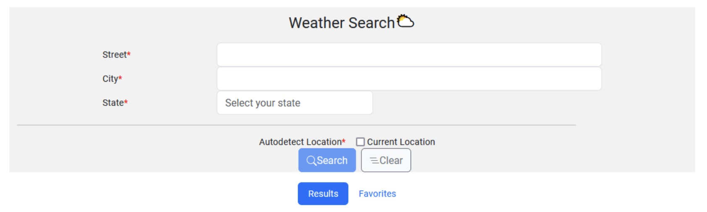I implemented the search form using Bootstrap to enhance the user experience and visual appeal, deviating from standard HTML controls. The form includes the following required fields when the "Current Location" checkbox is unchecked:
Search form contains 2 buttons:
- Search Button: The "Search" button will remain disabled until all required fields are filled, validation passes, and the user's location is successfully retrieved.
- Clear Button: The "Clear" button resets the form fields, removes any validation errors, navigates to the Results tab, and clears the results display area.
The autocomplete functionality for the City field is powered by the Google Places Autocomplete API service and implemented using Angular material.
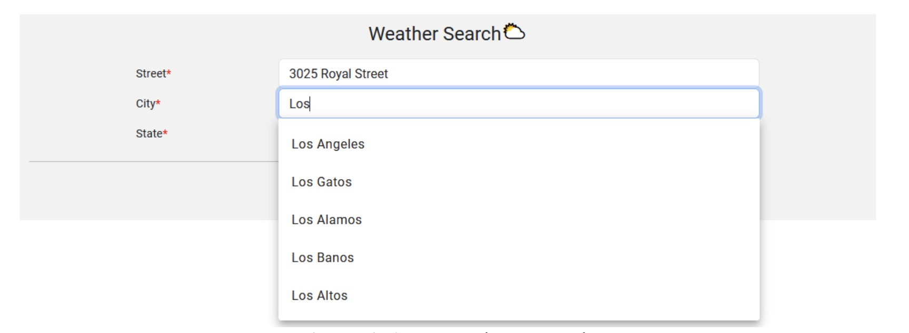The form validates the "Street" and "City" fields to ensure they are not empty or filled with only spaces. If the input is invalid, an error message is displayed.
Additionally, selecting the "Current Location" checkbox disables the "Street," "City," and "State" fields while keeping their existing values intact.
If user decides to use autodetect location, the website obtains their location using IPInfo API.
When the "Search" button is clicked and validation is successful, the application sends an AJAX request to a Node.js script hosted on Google Cloud. This script communicates with the Tomorrow.io API to fetch the weather data.
While data is being fetched, a dynamic progress bar is displayed to indicate the loading process. This feature is implemented using the progress bar component provided by Bootstrap.
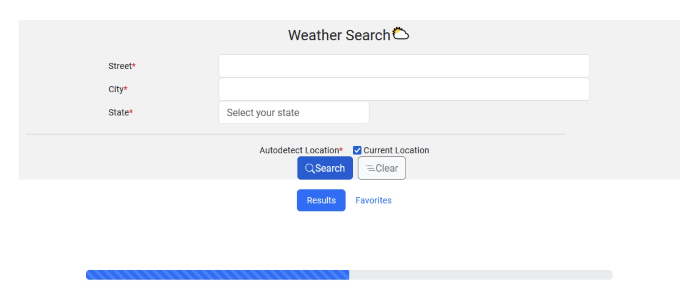Display Results
The weather results are displayed below the form, designed to be fully responsive and compatible with mobile devices. The layout dynamically adjusts based on the width and height of the user’s device to ensure an optimized viewing experience on smartphones and tablets.
This project demonstrates how to use form inputs to construct HTTP requests to the Google Geocode API and Tomorrow.io API to fetch geolocation and weather data. The latitude and longitude are obtained from the user's current location or the Google Geocode API, then passed to the Tomorrow.io API to retrieve weather details. The results are displayed on the webpage in three interactive tabs: Day View, Daily Temperature Chart, and Meteogram, providing a clear and responsive visualization of the data.
1. Day View Tab
The first card in the results section displays a 6-day weather forecast for the user's selected location, providing a clear and concise overview of the upcoming weather conditions. This card is shown before the Daily Temperature Chart and Meteogram tabs.
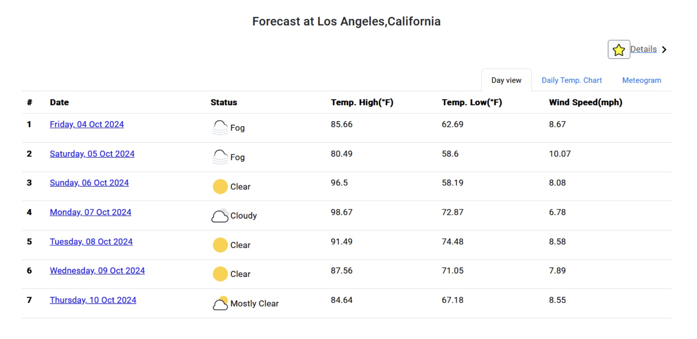2. Daily Temperature Chart Tab
The next tab displays a range graph showcasing the minimum and maximum daily temperatures for the selected location over the next 15 days, providing a detailed visual representation of temperature trends.
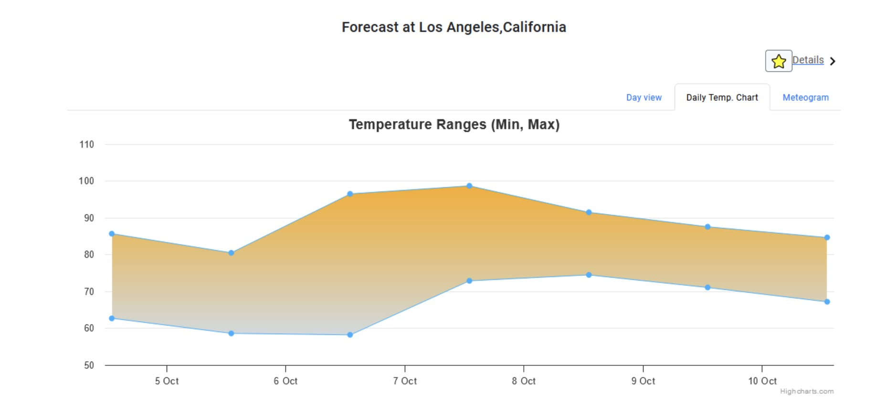3. Meteogram Tab
The Meteogram tab features an hourly-based plot that spans from the current time to the next 5 days, offering a detailed visualization of weather patterns over time.
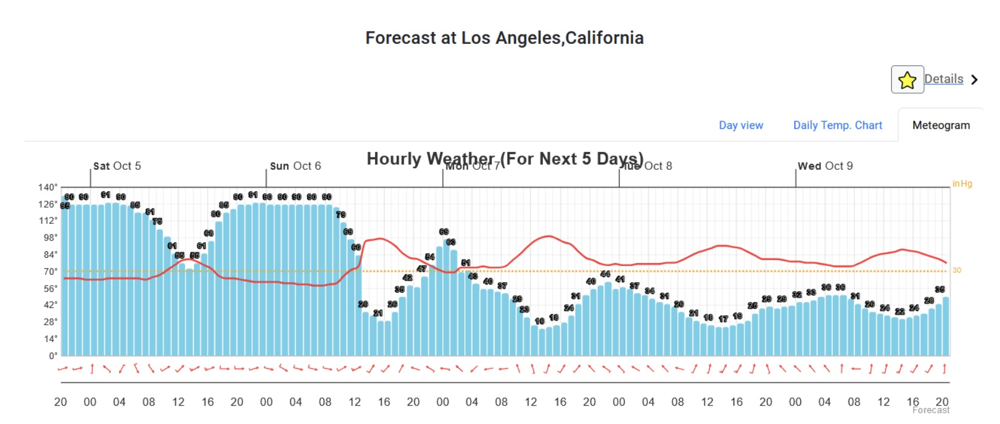Details Pane
Clicking on a row in the results table opens a new pane with detailed weather information for the selected day, displayed with a smooth "slide" transition. The details pane includes a simple table showing additional data from the Tomorrow.io API and features an interactive Google Map centered on the latitude and longitude used in the API query (obtained from IPinfo or the Google Geocode API).
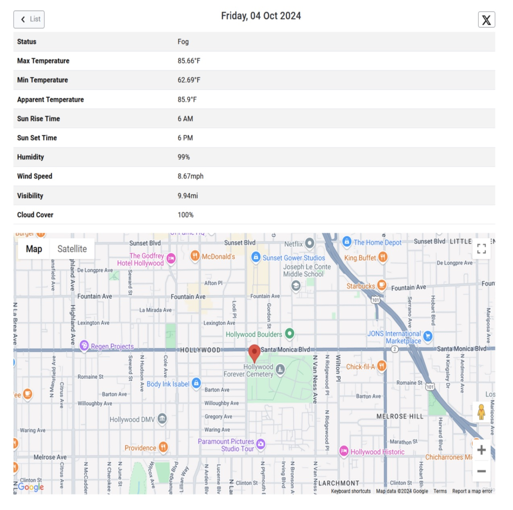The "Tweet" button lets users compose and share a weather update on X. Clicking the button opens a dialog displaying a pre-filled tweet in the following format: “The temperature in (City, State) on (Day of Week, Date) is (Temperature). The weather conditions are (Summary) #CSCI571WeatherSearch”.
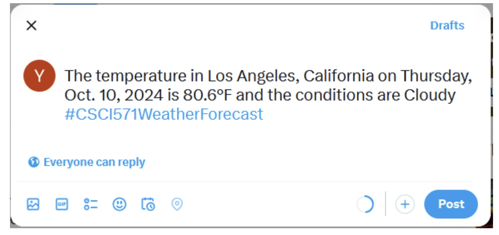Favorites Functionality
The Favorites tab displays a list of favorite cities in a table format, with the data stored and loaded from MongoDB Atlas (only storing the City and State). Users can click on a city name in the "City" column to fetch its weather details, while the "Trashcan" icon in the "Favorites" column allows them to remove a city from the list dynamically.
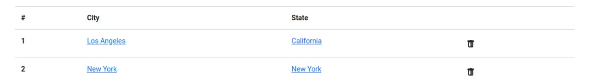The Favorites tab retains its data even if the user closes and reopens the browser, as the favorite cities are stored in MongoDB Atlas. If no cities are in the favorites list, a message saying *"Sorry! No records found."* is displayed to inform the user.
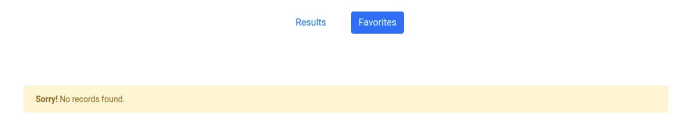If an error occurs due to a location issue or exceeding the API usage limit, an appropriate error message is displayed to the user. This ensures clear communication about the problem and enhances the user experience.
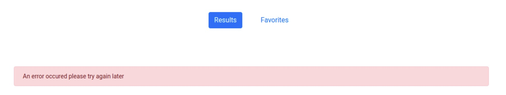This project is fully optimized for mobile devices. Features and layouts adapt dynamically to different screen sizes, providing a consistent and user-friendly experience on both mobile and desktop environments.